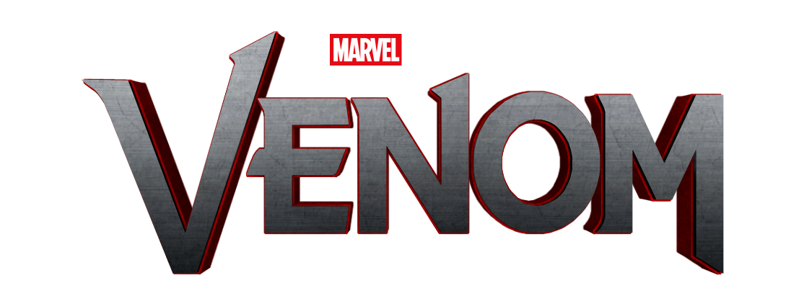

¡Nosotros somos Venom!
Eddie Brock, un periodista de investigación, busca exponer a la corporación Life Foundation por sus prácticas poco éticas. Durante su investigación, se encuentra con un simbiótico alienígena que se une a él, dándole increíbles poderes, pero también un oscuro sentido del humor y una naturaleza violenta.
A medida que Eddie se convierte en Venom, debe aprender a controlar sus nuevos poderes y la relación tumultuosa con el simbiótico, mientras enfrenta a su antiguo jefe, el Dr. Carlton Drake, quien busca aprovechar el simbiótico para sus propios fines. La historia explora temas de identidad, lucha interna y la línea entre el bien y el mal, todo en un contexto de acción y horror.
PELICULAS / TRAILERS
Venom (2018)
Venom: Let There Be Carnage (2021)
Venom: El último baile (2024)
CREADORES
Como un villano de Spider-Man. Su historia comienza cuando el simbiótico alienígena se une a Eddie Brock, un periodista que tiene una profunda enemistad con Spider-Man.
David Michelinie: David Michelinie: Guionista que escribió las historias que presentaron a Venom.
Todd McFarlane: Creó el diseño visual del personaje, con un aspecto distintivo que incluye una gran boca llena de dientes afilados y un simbiótico negro que se adhiere a su cuerpo.
Venom hizo su primera aparición en "The Amazing Spider-Man" #300, publicado en mayo de 1988.
Desde su creación, Venom ha evolucionado y se ha convertido en un personaje popular, teniendo su propia serie de cómics y adaptaciones cinematográficas.
Reparto
Tom Hardy
Michelle Williams
Riz Ahmed
Jenny Slate
Woody Harrelson
Scott Haze
Reid Scott
Peggy Lu/h2>
Chris O'Hara
Melora Walters
Peliculas
Venom (2018)
Venom: Let There Be Carnage (2021)
Venom: El último baile (2024)
Noticias
Integración en el Universo Marvel:
Con el continuo desarrollo del universo cinematográfico de Marvel (MCU), hay rumores sobre una posible integración de Venom en las futuras películas de Spider-Man. Esto ha generado especulaciones sobre un enfrentamiento entre Venom y Spider-Man, lo que podría llevar a una narrativa más amplia en el MCU.
Éxito en Merchandising:
Venom ha mantenido su popularidad no solo en el cine, sino también en el merchandising. La figura del personaje ha seguido siendo un éxito en ventas, con productos que van desde juguetes hasta ropa y accesorios. Esto refleja la fuerte base de fans que ha cultivado desde su creación.
Crossover con otros personajes de Marvel:
Con el creciente interés en los crossovers dentro del universo cinematográfico, hay conversaciones sobre cómo Venom podría interactuar con otros personajes icónicos, como Spider-Man y los héroes de los Avengers. Esto ha generado especulaciones sobre posibles colaboraciones en películas futuras.